Nishanth Koganti
VNR VJIET — M.Tech AI & DS
Lecture material: buntyke.github.io/rlcourse-mtech-fall26
The slides of this lecture are based on:
Lecture material: buntyke.github.io/rlcourse-mtech-fall26
Given an MDP \(\mathcal{M} = \langle \mathcal{S}, \mathcal{A}, \mathcal{P}, \mathcal{R}, \gamma \rangle\) and a policy \(\pi\):
Given an MDP \(\mathcal{M} = \langle \mathcal{S}, \mathcal{A}, \mathcal{P}, \mathcal{R}, \gamma \rangle\) and a policy \(\pi\):
Where the induced transition and reward functions are:
\[ \mathcal{P}^\pi_{ss'} = \sum_{a \in \mathcal{A}} \pi(a \mid s)\, \mathcal{P}^a_{ss'} \qquad \mathcal{R}^\pi_s = \sum_{a \in \mathcal{A}} \pi(a \mid s)\, \mathcal{R}^a_s \]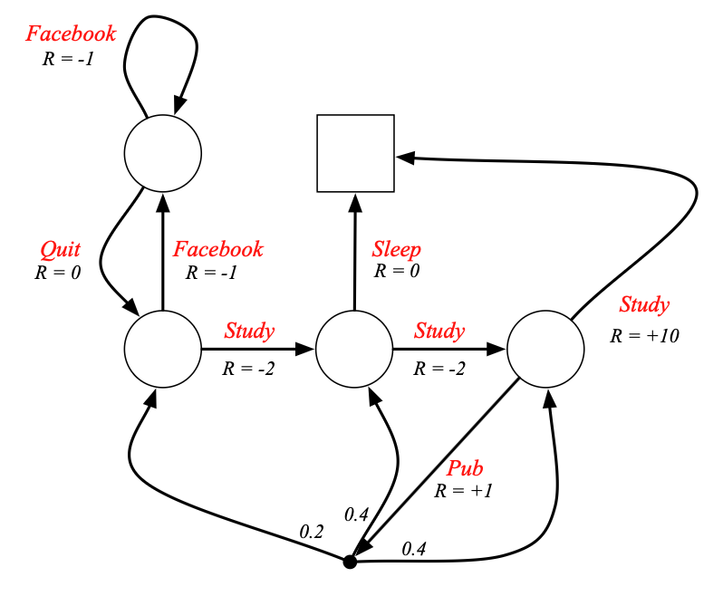
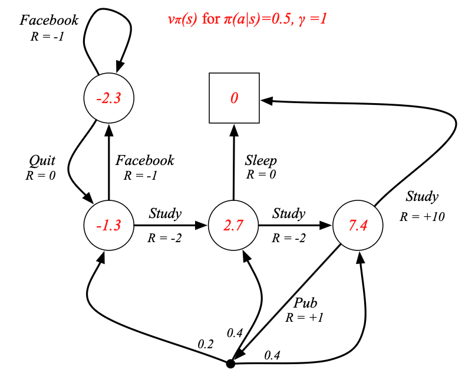
Start from the definition of the state-value function:
\[ v_\pi(s) \doteq \mathbb{E}_\pi[G_t \mid S_t = s] \]Apply the recursive return \(G_t = R_{t+1} + \gamma G_{t+1}\):
\[ \begin{aligned} v_\pi(s) &= \mathbb{E}_\pi[G_t \mid S_t = s] \\[0.4em] &= \mathbb{E}_\pi[R_{t+1} + \gamma G_{t+1} \mid S_t = s] \end{aligned} \]Expand the expectation over actions, next states, and rewards:
\[ \begin{aligned} v_\pi(s) &= \mathbb{E}_\pi[R_{t+1} + \gamma G_{t+1} \mid S_t = s] \\[0.4em] &= \sum_{a} \pi(a|s) \sum_{s'} \sum_{r} p(s',r \mid s,a) \bigl[r + \gamma\, \mathbb{E}_\pi[G_{t+1} \mid S_{t+1} = s']\bigr] \end{aligned} \]Recognise the inner expectation as \(v_\pi(s')\):
\[ \begin{aligned} v_\pi(s) &= \sum_{a} \pi(a|s) \sum_{s'} \sum_{r} p(s',r \mid s,a) \bigl[r + \gamma\, v_\pi(s')\bigr] \end{aligned} \]The Bellman equation for \(v_\pi\): value of a state = immediate reward + discounted successor value.
Backup diagrams graphically summarise update operations — they show how value information is transferred back from successor states to the current state.
Backup diagram for \(v_\pi\)
○ s
╱ │ ╲ actions (weighted by π)
● ● ● (s,a) pairs
╱╲ ╱╲ ╱╲ next states (weighted by p)
○ ○ ○ ○ ○ s'
Open ○ = state | Solid ● = state–action pair
Backup diagram for \(q_\pi\)
● (s,a)
╱╲ next states (weighted by p)
○ ○ s'
╱╲ ╱╲ next actions (weighted by π)
● ● ● ● (s',a')
Root at a state–action pair; branches to successor states then actions.
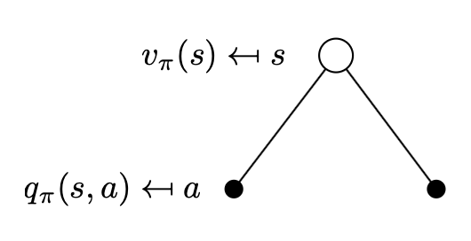
The state value is the average over actions, weighted by the policy:
\[ v_\pi(s) = \sum_{a \in \mathcal{A}} \pi(a|s)\, q_\pi(s,a) \]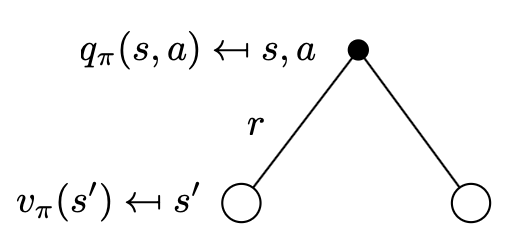
The action value is the immediate reward plus discounted successor value:
\[ q_\pi(s,a) = \mathcal{R}^a_s + \gamma \sum_{s' \in \mathcal{S}} \mathcal{P}^a_{ss'}\, v_\pi(s') \]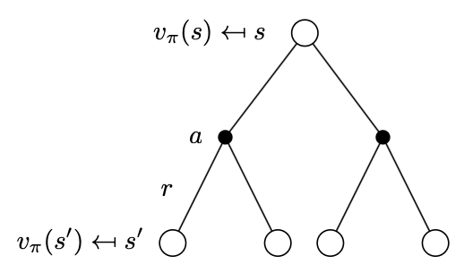
Substituting \(q_\pi\) into \(v_\pi\):
\[ v_\pi(s) = \sum_{a \in \mathcal{A}} \pi(a|s) \left( \mathcal{R}^a_s + \gamma \sum_{s' \in \mathcal{S}} \mathcal{P}^a_{ss'}\, v_\pi(s') \right) \]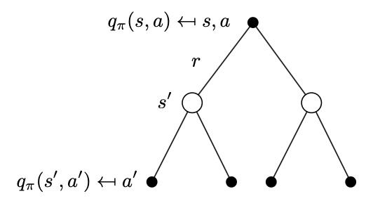
Substituting \(v_\pi\) into \(q_\pi\):
\[ q_\pi(s,a) = \mathcal{R}^a_s + \gamma \sum_{s' \in \mathcal{S}} \mathcal{P}^a_{ss'} \sum_{a' \in \mathcal{A}} \pi(a'|s')\, q_\pi(s',a') \]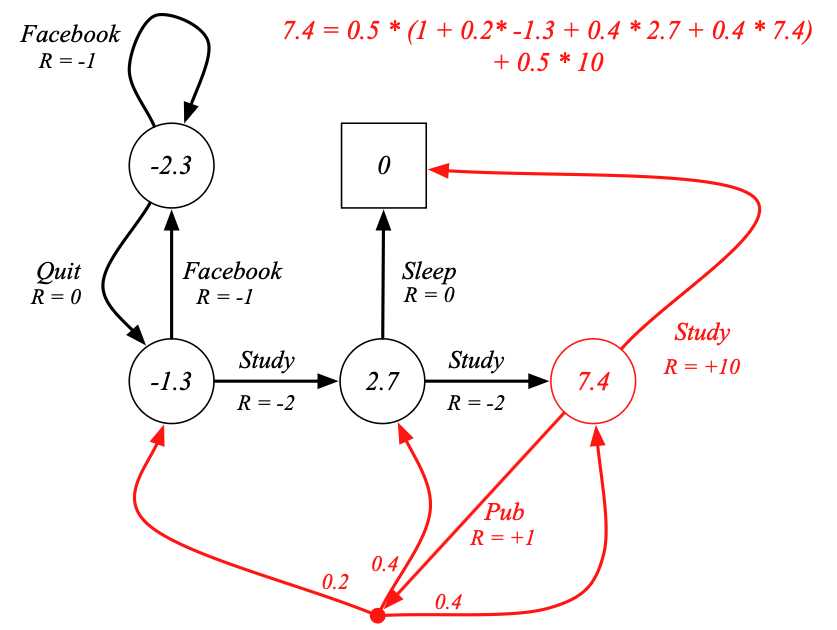
The Bellman expectation equation can be expressed concisely using the induced MRP:
\[ \mathbf{v}_\pi = \mathcal{R}^\pi + \gamma\, \mathcal{P}^\pi \mathbf{v}_\pi \]This is a linear system with a direct solution:
\[ \mathbf{v}_\pi = (I - \gamma\, \mathcal{P}^\pi)^{-1} \mathcal{R}^\pi \]Direct solution is \(\mathcal{O}(n^3)\) for \(n\) states — feasible only for small MDPs.
For large MDPs, iterative methods are needed (covered next lecture).
5×5 Gridworld MDP:
Policy \(\pi\): all four actions equally likely.
Discount \(\gamma = 0.9\).
\(v_\pi\) (random policy, \(\gamma=0.9\)):
| 3.3 | 8.8 | 4.4 | 5.3 | 1.5 |
| 1.5 | 3.0 | 2.3 | 1.9 | 0.5 |
| 0.1 | 0.7 | 0.7 | 0.4 | −0.4 |
| −1.0 | −0.4 | −0.4 | −0.6 | −1.2 |
| −1.9 | −1.3 | −1.2 | −1.4 | −2.0 |
Negative values near edges reflect high probability of hitting the boundary.
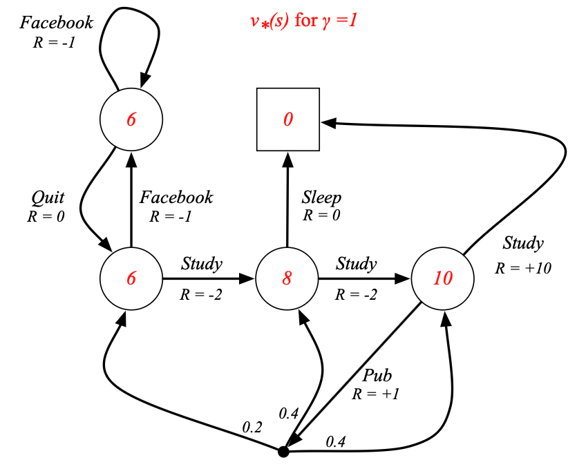
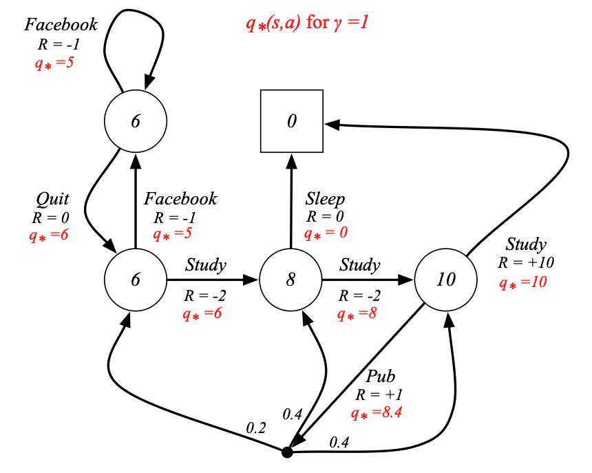
Define a partial ordering over policies:
\[ \pi \geq \pi' \quad \text{if}\quad v_\pi(s) \geq v_{\pi'}(s),\ \forall\, s \]An optimal policy can be found by maximising over \(q_*(s,a)\):
\[ \pi_*(a \mid s) = \begin{cases} 1 & \text{if } a = \arg\max_{a' \in \mathcal{A}}\, q_*(s,a') \\ 0 & \text{otherwise} \end{cases} \]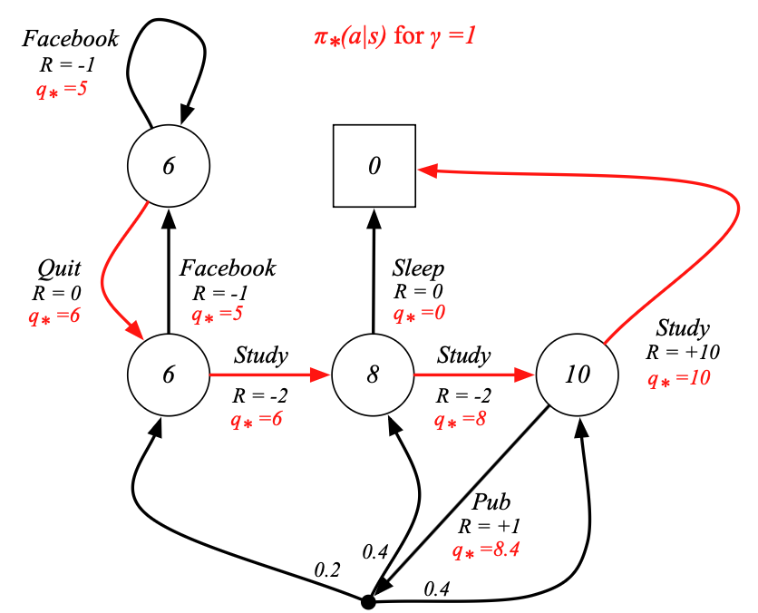
Solving the Bellman optimality equation for the same gridworld (A→A′: +10, B→B′: +5, \(\gamma=0.9\)):
\(v_*\) (optimal, \(\gamma=0.9\)):
| 22.0 | 24.4 | 22.0 | 19.4 | 17.5 |
| 19.8 | 22.0 | 19.8 | 17.8 | 16.0 |
| 17.8 | 19.8 | 17.8 | 16.0 | 14.4 |
| 16.0 | 17.8 | 16.0 | 14.4 | 13.0 |
| 14.4 | 16.0 | 14.4 | 13.0 | 11.7 |
All values are now positive — optimal policy avoids edge penalties.
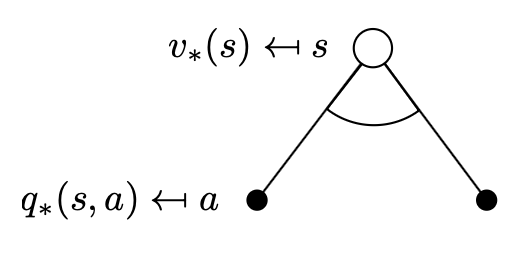
The value of a state under an optimal policy equals the expected return for the best action:
\[ v_*(s) = \max_{a}\, q_*(s,a) \]The arc at the agent's choice node represents taking the maximum rather than an average over policy.
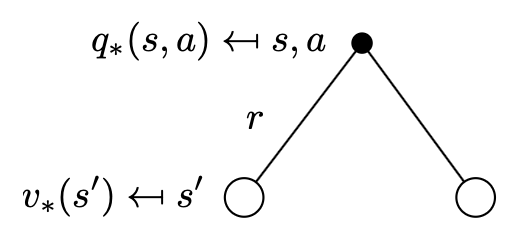
The optimal action value is the immediate reward plus the discounted optimal successor value:
\[ q_*(s,a) = \mathcal{R}^a_s + \gamma \sum_{s' \in \mathcal{S}} \mathcal{P}^a_{ss'}\, v_*(s') \]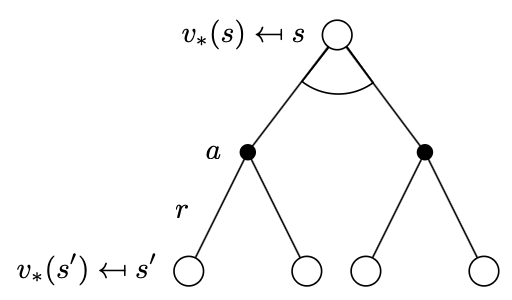
Substituting \(q_*\) into \(v_*\):
\[ v_*(s) = \max_{a}\left[ \mathcal{R}^a_s + \gamma \sum_{s' \in \mathcal{S}} \mathcal{P}^a_{ss'}\, v_*(s') \right] \]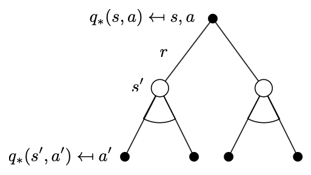
Substituting \(v_*\) into \(q_*\):
\[ q_*(s,a) = \mathcal{R}^a_s + \gamma \sum_{s' \in \mathcal{S}} \mathcal{P}^a_{ss'} \max_{a' \in \mathcal{A}}\, q_*(s',a') \]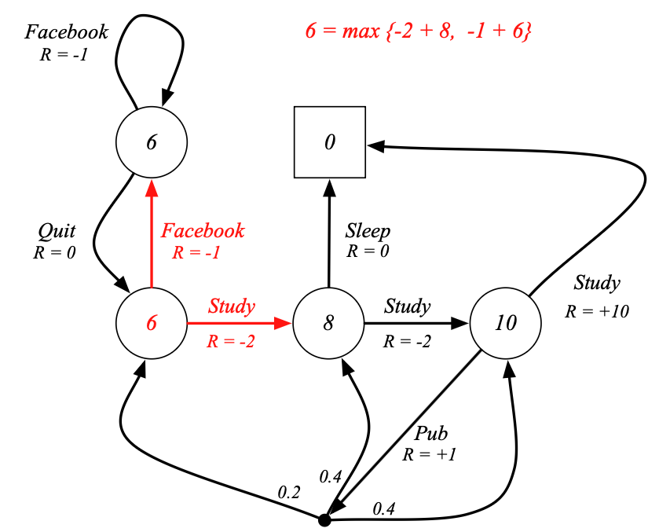
The BOE is non-linear — no closed-form solution in general.
Direct solution relies on three assumptions rarely true in practice:
The BOE is non-linear — no closed-form solution in general.
In practice, we rely on iterative solution methods: